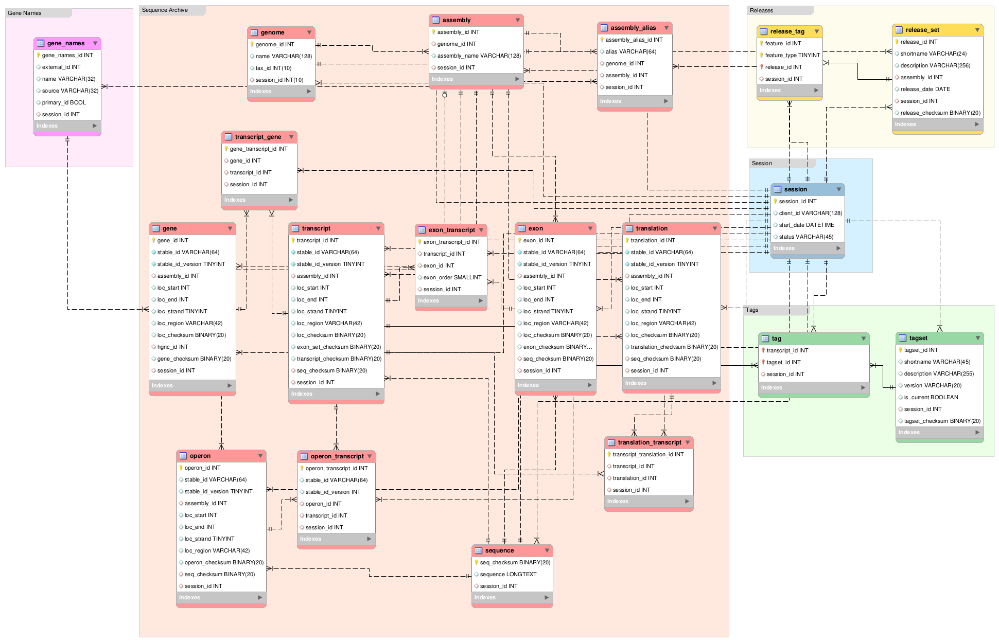
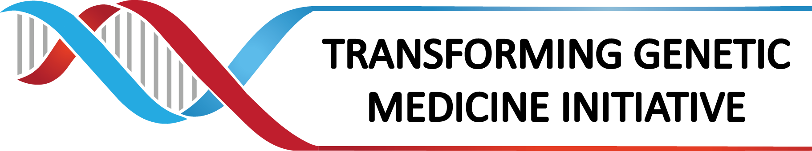

About this beta
This instance of TaRK has human annotations and sequences for Ensembl releases 86 to 90 loaded, along with a Swagger/OpenAPI based site for exploring the API. Currently, there are endpoints allowing basic lookups of annotations and sequence retrieval. As well, there's a proof of concept endpoint showing how calculating the difference between Ensembl releases might work and retrieving annotations by HGVS nomenclature.
The slide deck from a presentation on TaRK
can be found here.
Schema:

(click to enlarge)
Checksums
For both data integrity reasons and to facilitate calculating the differences between releases checksums are done at multiple levels of the data model.
- Release set
- Geomic location of every feature
- Gene
- Transcript
- Exon set of a transcript
- Translation
- Sequences
- Tagged feature sets
Known limitations/future enhancements: The current beta does not properly handle displaying the same feature when it remains unchanged across Ensembl releases, these are currently shown as separate records when they should be collapsed and a list of all relevant releases included in the record. As well, the manner in which assemblies are modelled is problematic, patch level releases of assemblies should be better grouped under the main assembly release (eg. GRCh37, GRCh38). Addressing these issues and other enhancements are in the development plan for TaRK going forward, and we welcome any other feedback on how to improve the API.
Funding:

{kind=link}